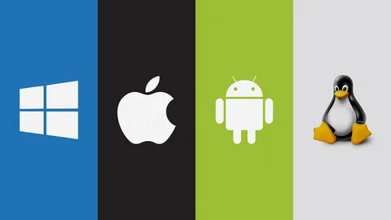
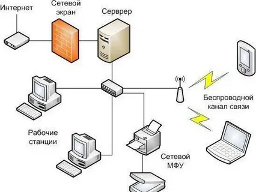
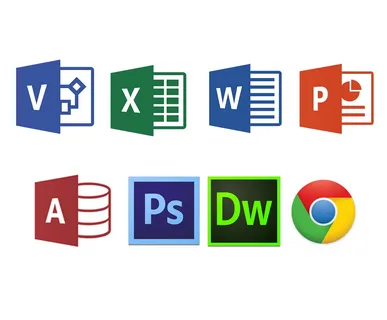

Программное обеспечение (ПО) – это набор данных, программ и инструкций, которые позволяют компьютеру выполнять различные задачи
Системное программное обеспечение — это низкоуровневое программное обеспечение, которое управляет аппаратным обеспечением компьютера и предоставляет базовые услуги программному обеспечению более высокого уровня. Существует два основных типа программного обеспечения: системное и прикладное. Системное программное обеспечение включает в себя программы, предназначенные для управления самим компьютером, такие как операционная система, утилиты для управления файлами и дисковая операционная система (или DOS)

Сетевое ПО — это программное обеспечение, позволяющее организовать работу пользователя в сети. Оно представлено общим, системным и специальным программным обеспечением: Общее сетевое ПО. Включает браузер, HTML-редакторы, графические веб-средства, машинные переводчики, антивирусные сетевые программы. Системное ПО. Включает операционную систему, сервисные программы, систему технического обслуживания.

Прикладное программное обеспечение (ПО) — это программы или группы программ, предназначенные для выполнения конкретных задач или функций, которые помогают пользователям в их работе или развлечениях. Прикладное ПО можно условно разделить на две большие группы: Прикладные программы общего пользования. К ним относятся офисные программы, простые редакторы графики, аудио и видео, игры.
